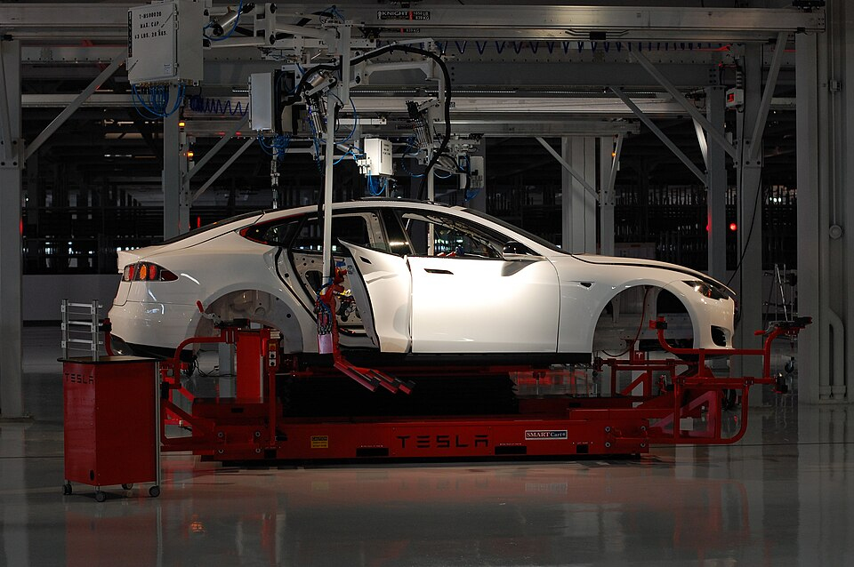
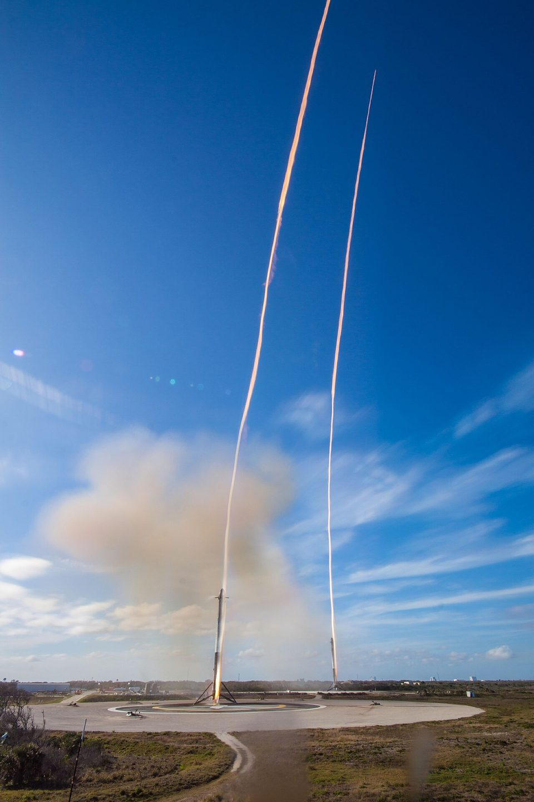

编者视角 · 商业档案
把未来
做成生意
- 参与创立的公司
- 9 家
- 史上首位身家破 5000 亿
- 2025.10
- 收购 Twitter
- $44B
- Grok 迭代至
- 第 4 代

TESLA
SPACEX SPACEX
SPACEX
 X
X
WAYS IN
三条进入路径
不必从头读到尾。按你手头的时间选一条路进来——每条路的尽头都是出处。
THE EMPIRE
公司版图
六家在营公司，一个运营者。这里一句话一家；档案、配图与来源一键可达。
看钱怎么流——个人投入、融资、收购与退出，18 笔逐笔带出处 →
Tesla
把电动车从「政策合规品」做成人人想要的科技产品；史上首家市值破万亿的车企。
公司档案 → 02 · SPACESpaceX
用可回收火箭把发射成本打下来；如今既运宇航员，也筹划火星。
公司档案 → 03 · PLATFORM𝕏
以 440 亿美元买入并更名 X——既是他的扩音器，后来也成为 AI 公司的一部分。
公司档案 → 04 · AIxAI
Grok 之父；2026 年 1 月完成 200 亿美元 Series E（估值约 2300 亿量级），英伟达、思科参投。
公司档案 → 05 · BRAIN–COMPUTERNeuralink
第一批客户是瘫痪患者——用意念移动光标与设备；长期故事是在 AI 变强的年代，给人类大脑留一个接口。
公司档案 → 06 · TUNNELSThe Boring Company
起因是一句堵车抱怨：地面解决不了，就从地下走。业务聚焦市政与交通隧道，卖点是持续压低每英里成本。
公司档案 →FEATURES
旗舰专题
一个主题拆到底——每篇专题都锚定第一手材料。
本期看点 · IN THIS ISSUE
- 正文杂志版式：首字下沉、引语题花与 16.5px 基线锁定（v11.17.0）。
- 图表复古化：双主题 hatch 纸纹，数据编码零触碰——ribbon 线宽仍为生成器精确值（v11.18.0）。
- 专题全部封面化，本期封面故事见下（v11.19.0）。
COVER STORY · DEEP DIVE 01 · CAPITAL
资本运作全解
从 Zip2 3.07 亿美元到 xAI 200 亿美元——退出、融资、收购、估值四条线并进，每一步都锚定账本条目。
进入专题2008 生死役
三枚火箭炸光、Tesla 距发薪只差几小时、信贷冻结——从三飞失败到圣诞夜关账，144 天逐节点推进。
平台变局
440 亿买下城市广场、极硬核重塑、再到全股票并入 xAI——三个阶段逐笔推进。
承诺与结果
五组承诺-结果对账：原话、目标、结果全在册——四个诚实的归类，不打分。
用人逻辑
第一性原理招聘、公司城模式、以及为什么「人类被低估了」。
面对失败的模式
2008 三连败、2018 生产地狱、2022 Twitter 混乱——同一套「先开火后瞄准」节奏。
监管博弈
SEC 和解、FAA 塔捕许可、德州迁册——监管如何成为他的战略资源。
AI 战略布局
2015 OpenAI 联合创始 → 2023 xAI → 2025 收购 X 的 AI 全景。
KEY EVENTS
关键事件与证据
从 115 条言行账本里选出的五个节点——每条都链回原始记录。
PayPal 交割——钱去哪，一切由此开始
账本 e2002-10-03 · 本人 2012–2013 访谈自述（USA Today 等）
eBay 完成 15 亿美元收购；31 岁税后到手约 1.8 亿美元——足够此生不再工作。钱的去向，是本站其余一切故事的起点。
圣诞夜融资——最后一天的最后一个小时
账本 e2008-12-24 · Business Insider · 本人 X 自述
SpaceX 前一天刚被 NASA 16 亿美元合同救起；Tesla 的融资在信贷紧缩中摇摇欲坠，最终关闭于圣诞夜——距发不出工资只差几个小时。
「资金已落实」——一条推文变成一场官司
账本 e2018-08-07 · X 帖 · SEC 诉讼与和解文件
Model 3 刚爬出生产地狱，做空者围猎；8 月 7 日上午，他敲下把一家公司股票变成一场官司的那句话。
RECENT
最近实质更新
只列实质变化；完整修订记录见修订记录。
- v6.8.0 2026-09-29首页深色纪实封面与手机首屏重构修订记录 →
- v6.7.0 2026-09-29素材溯源体系与新增纪实图片修订记录 →
- v6.6.0 2026-09-29V7 设计令牌基础层与全站色彩归一修订记录 →
- v6.5.0 2026-09-2617 轮精进计划收官与全量对账修订记录 →